Start
How visitors begin this route and what detail is useful at the first step.
Process / 01
Process opens as a clear engineering decision hub: what Core offers, who it helps, why it matters, and which route to take first.
The first screen combines positioning, proof, primary action, and fast internal navigation, so people can act immediately or compare the rest of the process route with context.
Red-rule technical hero
Select the closest route and Core keeps the next step, proof, and follow-up expectation aligned with reliability and standards.
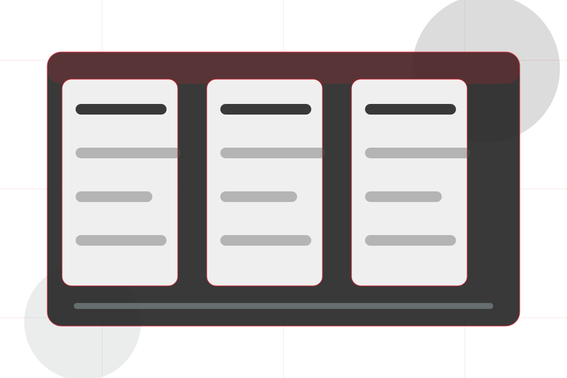
Process / 02
Assess explains the operating sequence so visitors can see how the first request becomes a clear recommendation and follow-up.
The steps are written from the visitor side: what they do first, what Core clarifies, what they receive, and how support continues.
Explore Process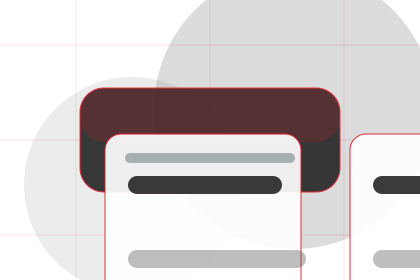
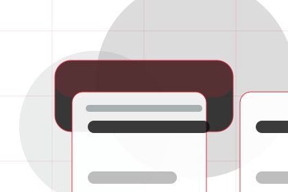
How visitors begin this route and what detail is useful at the first step.
Process / 03
Design explains the operating sequence so visitors can see how the first request becomes a clear recommendation and follow-up.
The steps are written from the visitor side: what they do first, what Core clarifies, what they receive, and how support continues.
Explore Process
How visitors begin this route and what detail is useful at the first step.
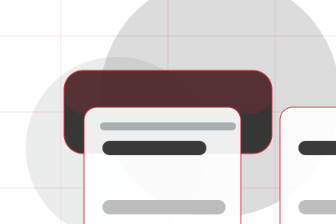
What Core reviews, filters, or explains before recommending the next move.
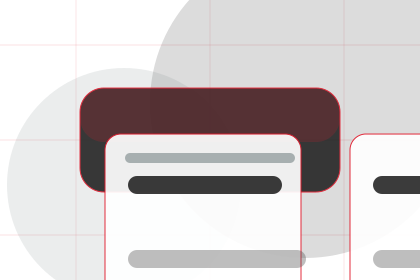
What the visitor receives afterward, including support, proof, or a handoff to the next page.
Process / 04
Model explains the operating sequence so visitors can see how the first request becomes a clear recommendation and follow-up.
The steps are written from the visitor side: what they do first, what Core clarifies, what they receive, and how support continues.
Explore ProcessHow visitors begin this route and what detail is useful at the first step.
What Core reviews, filters, or explains before recommending the next move.
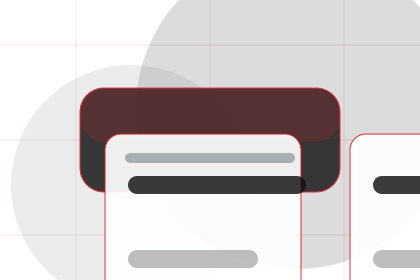
What the visitor receives afterward, including support, proof, or a handoff to the next page.
Process / 05
Validate explains the operating sequence so visitors can see how the first request becomes a clear recommendation and follow-up.
The steps are written from the visitor side: what they do first, what Core clarifies, what they receive, and how support continues.
Explore ProcessHow visitors begin this route and what detail is useful at the first step.
What Core reviews, filters, or explains before recommending the next move.
What the visitor receives afterward, including support, proof, or a handoff to the next page.
Process / 06
Implement explains the operating sequence so visitors can see how the first request becomes a clear recommendation and follow-up.
The steps are written from the visitor side: what they do first, what Core clarifies, what they receive, and how support continues.
Explore ProcessHow visitors begin this route and what detail is useful at the first step.
What Core reviews, filters, or explains before recommending the next move.
What the visitor receives afterward, including support, proof, or a handoff to the next page.
Process / 07
Test explains the operating sequence so visitors can see how the first request becomes a clear recommendation and follow-up.
The steps are written from the visitor side: what they do first, what Core clarifies, what they receive, and how support continues.
Explore Process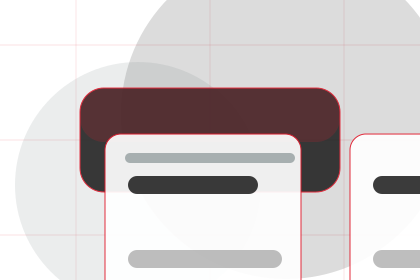
How visitors begin this route and what detail is useful at the first step.
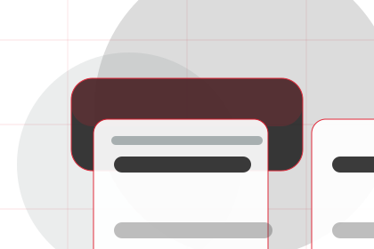
What Core reviews, filters, or explains before recommending the next move.
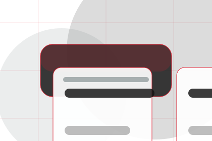
What the visitor receives afterward, including support, proof, or a handoff to the next page.
Process / 08
Document explains the operating sequence so visitors can see how the first request becomes a clear recommendation and follow-up.
The steps are written from the visitor side: what they do first, what Core clarifies, what they receive, and how support continues.
Explore ProcessHow visitors begin this route and what detail is useful at the first step.
What Core reviews, filters, or explains before recommending the next move.
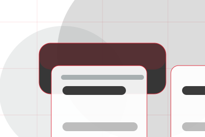
What the visitor receives afterward, including support, proof, or a handoff to the next page.
Process / 09
Support explains the practical scope, best-fit situations, and expected outcome so engineering visitors can compare options without decoding jargon.
The section keeps the offer concrete: what is included, who it is best for, what decision it supports, and which linked route gives the deeper detail.
Open ContactWho should use support and when it belongs in the process journey.
The practical benefit visitors should expect after choosing this route.
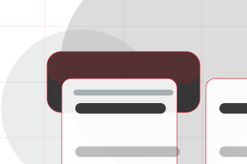
Where to compare details, pricing, support, or contact options before committing.
Process / 10
Core closes the process route with a clear action, a quick reminder of the value, and a low-friction way to ask an engineer.
Visitors who are ready can use the primary action. Visitors who are still comparing can scan the section links, proof, and support routes before they ask an engineer.
Ask EngineerThe final block keeps the choice simple: act now, compare one more proof route, or send enough detail for a focused response.
Ask Engineerreliability and standards
An engineering authority site with editorial project blocks, red rules, technical proof, and expert enquiry. Process ends with a direct path to ask an engineer, plus enough context for visitors who still need to compare.
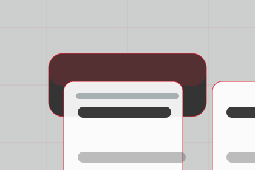
Ask EngineerInformation is provided for planning and should be reviewed for the final client, location, and operating rules.